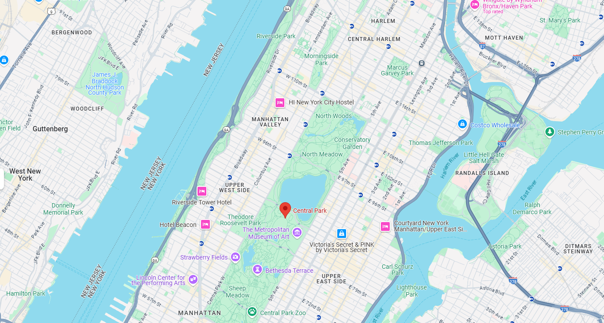

Explore the green heart of New York City.
Central Park's construction, based on the modified Greensward Plan from 1868, was led by designers Frederick Law Olmsted and Calvert Vaux, alongside various engineers, architects, and landscape experts. The project was challenging due to the park's rocky and swampy terrain, requiring extensive excavation, soil importation, and innovative machinery. By 1858, major work had begun, employing mostly Irish and European immigrant laborers under difficult conditions. Early features like The Lake and The Ramble were completed by 1860, while the Civil War did not halt progress. Disputes over cost and management led to Olmsted and Vaux's temporary resignations, but they were re-hired in 1865 to oversee the final phases of construction. By 1876, Central Park was officially completed, with new structures, roadways, and recreational spaces attracting a broad public audience.
Throughout the late 19th and early 20th centuries, Central Park faced neglect, funding shortages, and increased commercialization, leading to its decline. Efforts to preserve its landscape, led by figures like Samuel Parsons and advocacy groups, helped resist large-scale modifications. However, it wasn't until the 1930s, under parks commissioner Robert Moses, that a major revitalization took place. Moses initiated large-scale cleanups, built new playgrounds, restored landscapes, and introduced modern amenities using New Deal funding. Despite further developments in the mid-20th century, Moses' approach faced criticism for prioritizing infrastructure over Olmsted's original vision. Central Park remained a vital public space, evolving through various restoration efforts to balance preservation with urban demands.
Central Park offers a diverse range of attractions and activities, making it a vibrant destination for visitors of all ages. Iconic landmarks like Bethesda Terrace and Fountain, Bow Bridge, and the Belvedere Castle provide scenic spots for photography and relaxation. The park’s vast green spaces, such as Sheep Meadow and the Great Lawn, are perfect for picnics, sunbathing, and outdoor sports. Visitors can explore The Ramble, a woodland area ideal for birdwatching, or take a leisurely boat ride on The Lake. The Central Park Zoo and Conservatory Garden add to the park’s charm, while seasonal activities like ice skating at Wollman Rink in winter and open-air performances at the Delacorte Theater in summer keep the park lively year-round. Cyclists and joggers frequent the park’s winding paths, and guided tours provide historical insights into its design and evolution. Whether seeking adventure, relaxation, or cultural experiences, Central Park offers something for everyone.
Central Park on map
843 Acres - The park covers a vast area in the heart of Manhattan.
Over 160 Years Old - Established in 1857 as a public park.
Sports & Recreation - Offers biking, boating, jogging, and more.
Famous Film Location - Featured in hundreds of movies and TV shows.